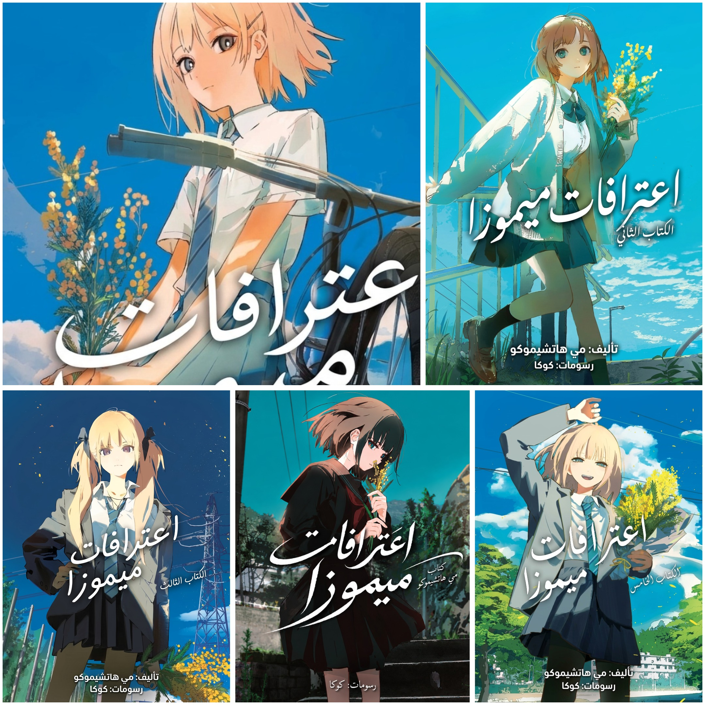
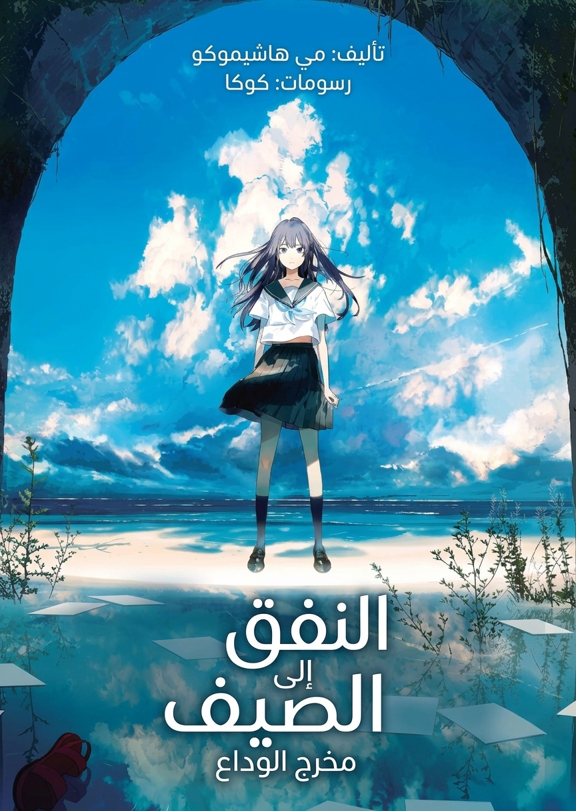
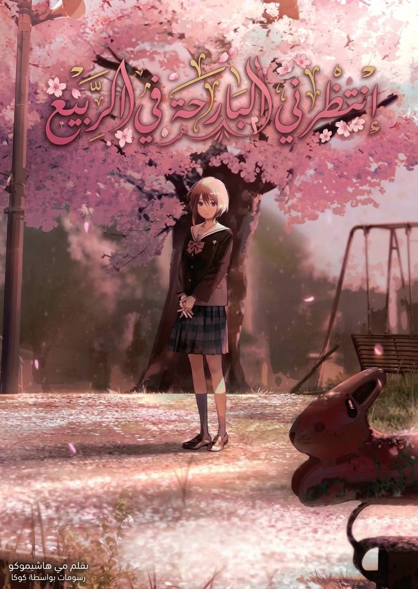
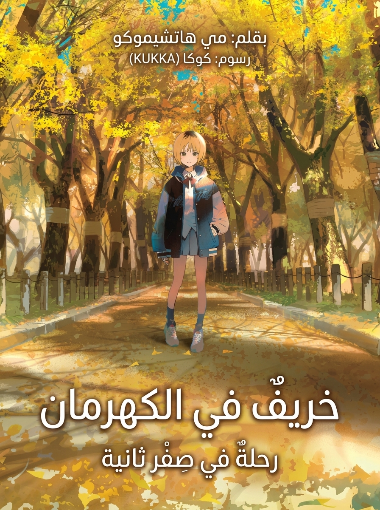

اعترافات الميموزا
The Mimosa Confessions
رحلة إنسانية عميقة تلامس صراعات الهوية والقبول، حيث يقف الفتى ساكوما بجانب صديق طفولته في مواجهة نظرات المجتمع وأسرار الماضي.
ترجمة أدبية منقحة وتعريب بصري متكامل لأبرز الروايات الخفيفة اليابانية الغير المعروفة، متوفرة مجاناً بصيغتي PDF و EPUB.
انضم لقناة التليجرام الرسمية
رحلة إنسانية عميقة تلامس صراعات الهوية والقبول، حيث يقف الفتى ساكوما بجانب صديق طفولته في مواجهة نظرات المجتمع وأسرار الماضي.

نفق غامض يحقق الأمنيات مقابل استهلاك الزمن من عمرك؛ يلتقي بطل مثقل بالندم بفتاة غامضة لاستكشاف أسراره.

في جزيرة معزولة، يجد فتى نفسه عالقاً في حلقة زمنية غامضة تدفعه لمحاولة إنقاذ صديقته من مصير مأساوي.

في تمام الساعة 11:14:36 صباحاً يتوقف الزمن في العالم بأكمله، لينطلق فتى وفتاة متمردة سيراً على الأقدام نحو طوكيو لفك اللغز[cite: 1].